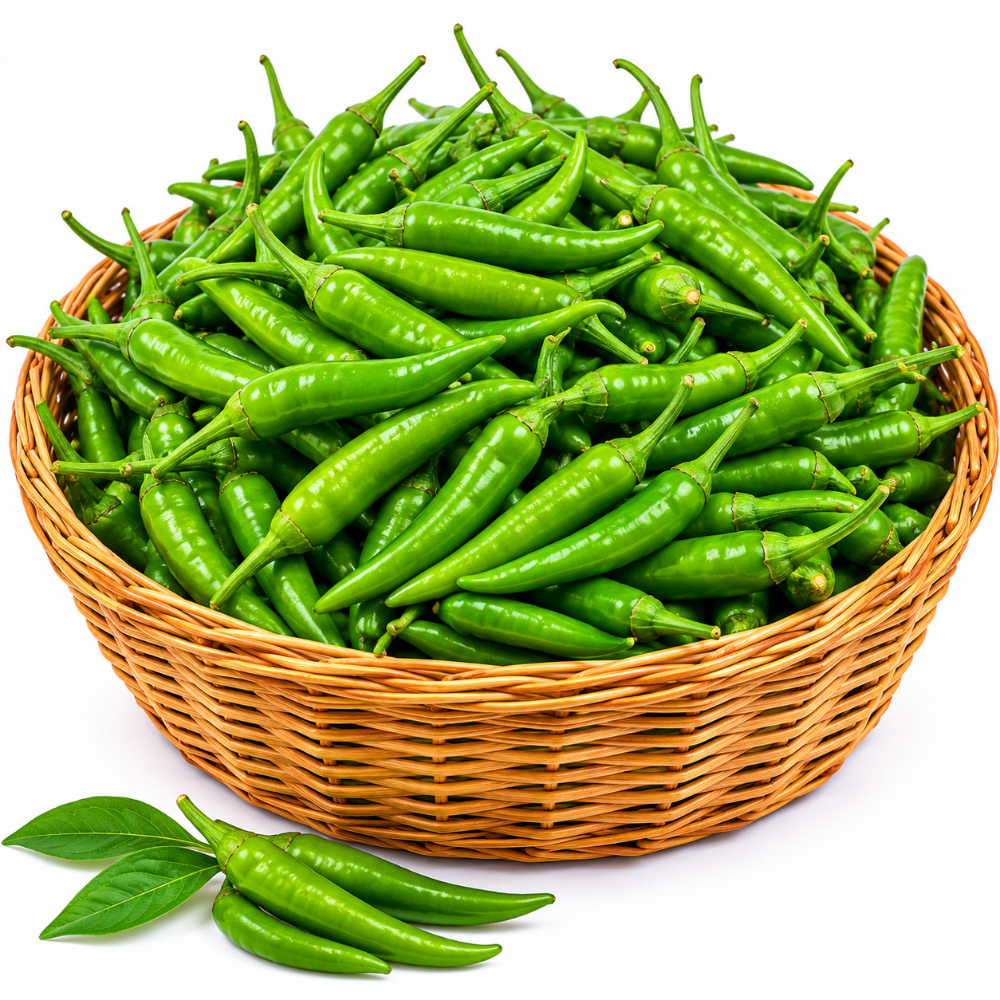
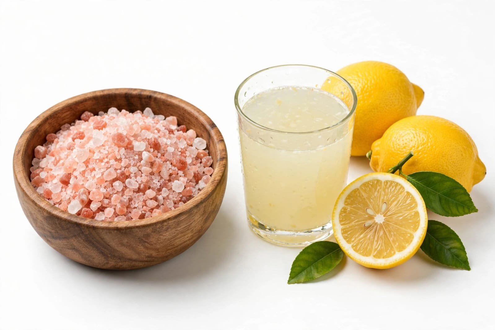
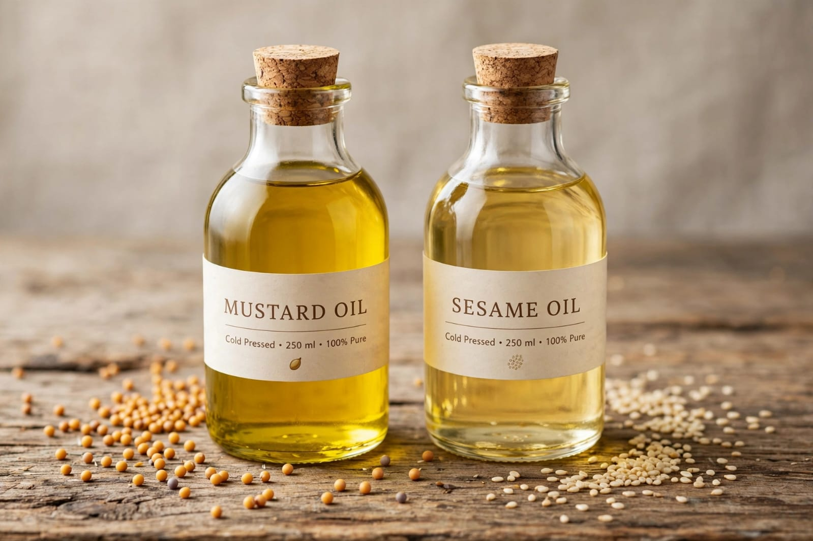

Ingredients 🌶️
Fresh ingredients and aromatic spices bring the chili pickle to life.

🌶️ Fresh Chili
Handpicked farm-fresh green & red chilies provide the delicious fiery base.

🌾 Mustard & Fenugreek
Golden mustard seeds & fenugreek add authentic flavour.

🧂 Rock Salt & Lemon
Natural rock salt & Lemon juice help preserve naturally.

🫙 Mustard Oil & Spices
Cold-pressed mustard oil gives rich long-lasting flavour.